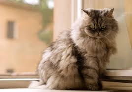
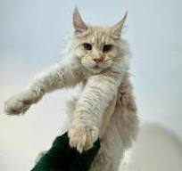
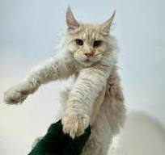

კატების შესახებ
კატები არიან ერთ-ერთი ყველაზე პოპულარული შინაური ცხოველები მსოფლიოში. ისინი ცნობილია თავისი დამოუკიდებლობით, გამჭრიახობით და მოსიყვარულეობით.
კატების ჯიშები
არსებობს მრავალი კატების ჯიში, მათ შორის: სპინქსი, პერსიელი, და მანკუნი.
- სპინქსი
- სპარსული
- მანკუნი
გალერეა
შეხედეთ ჩვენი კატების საინტერესო ფოტოებს:
 
